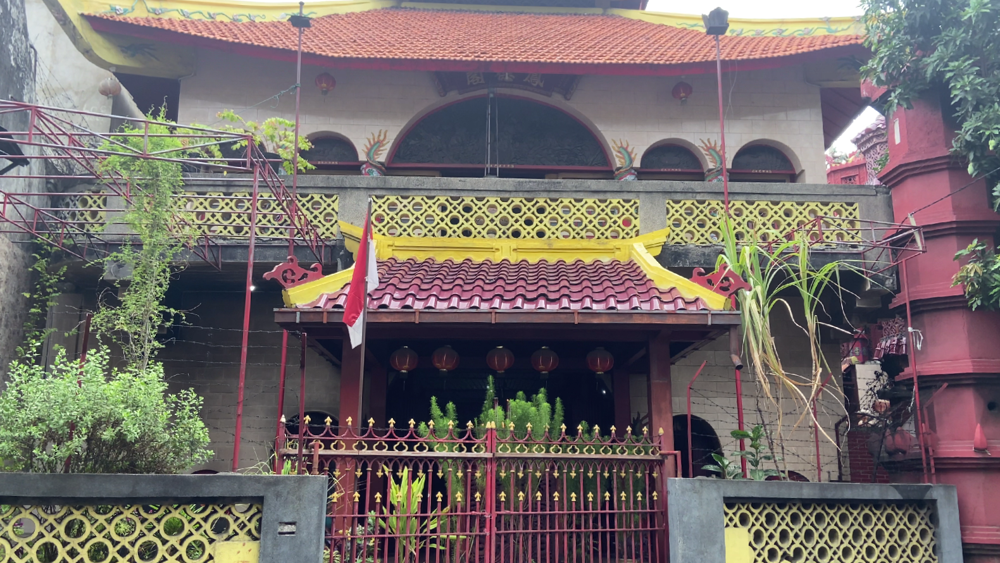

Contact
Nyamplungan Kec. Pabean Cantikan Surabaya Jawa Timur
+62 812-2990-1978 (P. Lurah)
wisatakelurahannyamplungan@gmail.com
Gallery
Foto





© wisatakelurahannyamplungan, All Right Reserved.
Dev By @